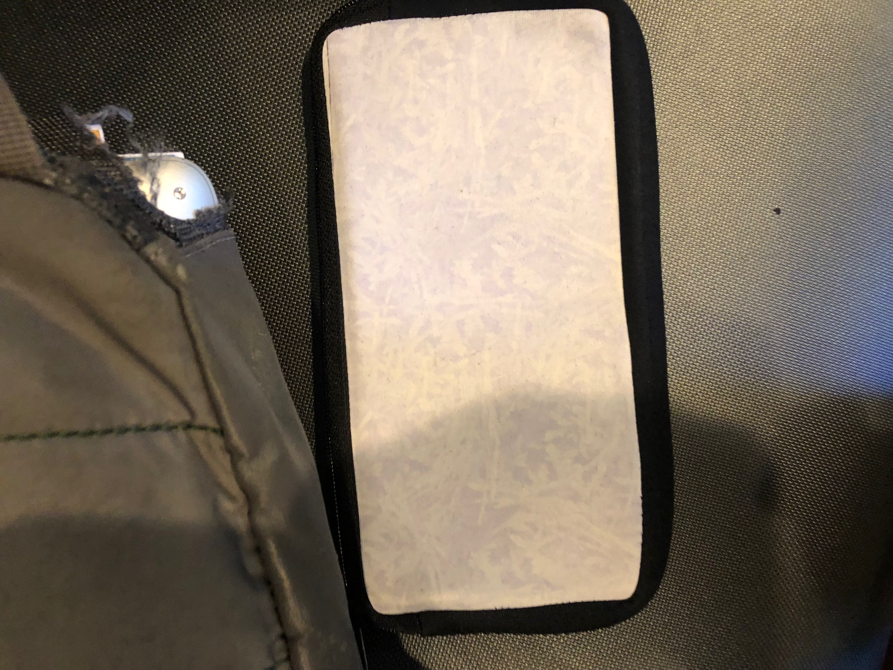
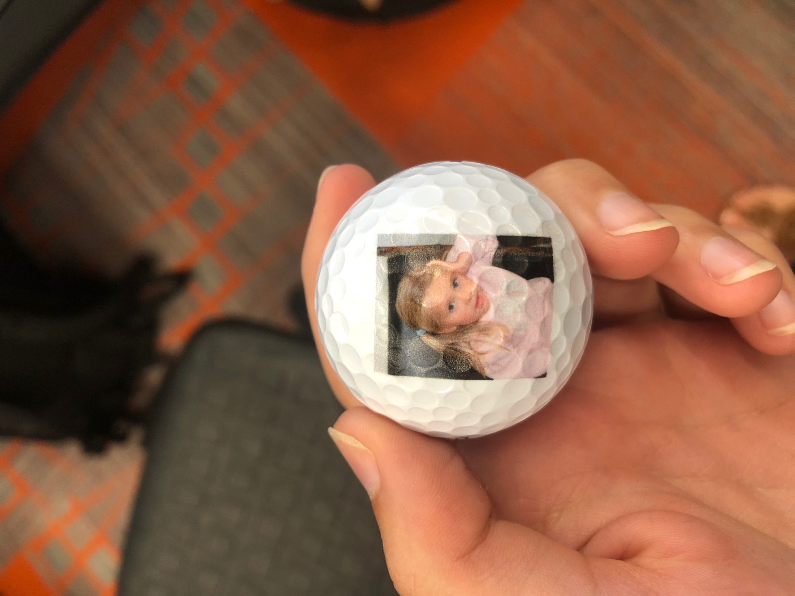

This week we first learned how to use Correl Draw and GTX. The first thing I did was design my T shirt. My design was the outline of Ohio with WRA written inside and heart over Hudson. This was pretty easy for me and I didn't have any issues with printing. The second thing I did was sublimation. Sublimation is transferring color using heat. I used sublimation to make my pencil case. I found the template online and then made a design on corell draw. My pencil case turned out pretty well over all. The last thing I did was use the UV printer.I found a picture and uploaded it to a flash drive. Then I put the golf ball template in the printer and set up the axises. Finally, I plugged the flash drive in and sized my image. The golf ball turned out really well and is my favorite thing I've made this week. I think UV printing is more effifient and easier to do. With sublimation the final product often doesn't look like the original print. UV printers can print on almost anything while sublimation is mainly fabrics. Uv printers do a better job with colors because they stay true while sublimation dulls.
 